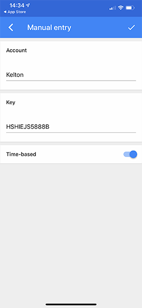

Proprietarul unui cont este considerat intotdeauna posesorul adresei de email inregistrate pe cont. Din motive de securitate asigurati-va ca nu pierdeti accesul la adresa de mail de pe cont, in caz contrar contul este pierdut.
Stafful ofera ajutor limitat numai prin intermediul cererilor de recuperare care pot fi facute pe website-ul RPG si nu garanteaza recuperarea unui cont pierdut. Ne rezervam dreptul de a respinge orice cerere fara a oferi un motiv.
Nota informativa
Toate sanctiunile vor fi acordate conform nivelului real al jucatorului (adica se calculeaza toate punctele de respect ale jucatorului pentru a-i determina nivelul real).
Nu sunt permise afacerile sau tentativele de afaceri cu bunuri reale pe bunuri in joc (sanctiune: ban permanent).
Nu sunt permise afacerile sau tentativele de afaceri cu gold pe bunuri in joc (sanctiune: ban 30 de zile).
Nu sunt permise afacerile sau tentativele de afaceri care implica crearea mai multor clanuri și vânzarea lor la suprapreț după ce fac minim o lună de zile vechime (sanctiune: ban 30 de zile).
Nu sunt permise afacerile sau tentativele de afaceri de conturi pe bunuri reale sau bunuri in joc (sanctiune: ban permanent fara a putea cumpara unban din shop).
Important
A doua abatere se sanctioneaza direct cu ban permanent fara a putea cumpara unban din shop.
Datorita multitudinii de jucatori care incalca aceste reguli, ne rezervam dreptul de a trage la raspundere si a sanctiona transferurile sau afacerile care nu au niciun rationament logic sau justificare.
Stafful nu se ocupa de problemele legate de conturi sparte, bunuri pierdute in timpul spargerii unui cont, sanctiuni primite in timpul spargerii unui cont si asa mai departe. Este datoria fiecarui jucator sa aiba grija de contul sau de emailul care e setat pe cont.
Impartirea contului cu alte persoane poate duce la astfel de probleme si riscati sa ramaneti fara cont, bunuri sau sa fiti sanctionati din cauza acestora.
Recuperarea unui cont pierdut se poate face numai printr-o cerere de recuperare pe website, facand click pe butonul Sign In iar mai apoi pe Lost your account. Cititi cu atentie regulamentul care va apare acolo atunci cand incercati sa recuperati un cont.
Nota informativa
Adminii de level 4+ isi rezerva dreptul de a sanctiona o persoana care se ocupa cu spargeri de conturi sau de a ajuta o persoana a carui cont a fost spart daca considera necesar.
Atentie, adminii nu au absolut nicio obligatie sa sanctioneze pe cineva sau sa va ajute in cazul in care v-a fost spart contul.
Exemple cum poate sa-ti fie spart contul
impartirea parolei/PIN-ului cu alte persoane.
parola si PIN usor de ghicit.
lipsa activarii 2FA-ului (autentificare in 2 pasi) pe cont.
adresa de email sparta.
introducerea parolei si PIN-ului in alte locuri in afara serverului nostru de sa-mp sau a websiteului serverului nostru.
accesarea de linkuri necunoscute.
descarcarea de fisiere necunoscute.
Preventia spargerilor de conturi
cea mai importanta metoda de preventie este pe departe activarea 2FA-ului, gasiti detalii mai jos cum puteti face asta.
nu oferiti parola/PIN-ul contului absolut nimanui.
folositi o parola care sa aiba minim 10 caractere, minim 1 majuscula care sa nu fie prima litera din parola, minim 1 cifra si minim 1 simbol (ex: andr3!Joac4B!ne).
aveti grija de adresa de email utilizand aceleasi sfaturi ca pentru securizarea contului de sa-mp, si acolo puteti activa 2FA.
nu folositi si nu introduceti parola si PIN-ul pe alte servere sau alte site-uri care nu ne apartin. Nu vom organiza niciodata tombole in care sa va introduceti parola de la cont. Acelea sunt 100% inselatorii. Aceste site-uri sunt cunoscute ca si site-uri de tip phishing. Gasiti mai multe informatii online.
nu intrati pe linkuri pe care nu le cunoasteti ca fiind in totalitate curate. Accesarea unor linkuri va poate duce pe site-uri care contin cookie stealere (care sa conecteze pe altcineva pe conturile tale din browser) sau care sa contina tot felul de virusi cu instalare automata.
nu descarcati si nu acceptati fisiere in care nu aveti incredere in totalitate ca sunt curate. Puteti primi un fisier de la un prieten care sa contina virusi. Puteti descarca un mod sau un modpack care contine virusi. Nu tot ce gasiti pe internet sau primiti de la altii este curat. Daca aveti nevoie de moduri va sfatuim sa le descarcati doar de la noi de pe forum din sectiunea de moduri, unde acestea sunt verificate inainte de a fi aprobate acolo.
Pe scurt, 2FA-ul este o aplicatie suplimentara pe telefon care va genera un cod din 6 cifre care se schimba periodic. Acel cod va fi folosit la conectarea pe cont cand se schimba ziua calendaristica sau cand vi se schimba IP-ul.
Important de stiut: daca nu aveti 2FA-ul activat iar cineva va intra pe cont, acea persoana poate activa 2FA-ul si sa va blocheze in afara contului. Ce mai trebuie sa stiti este ca daca va este sparta adresa de email, cel care a spart-o se poate folosi de aceasta pentru a dobandi acces la 2FA-ul de pe serverul de sa-mp, asadar aveti grija de email si setati un email valid pe cont.
Pentru o protectie sporita, 2FA-ul este obligatoriu pentru persoanele care detin functii pe server (lider, helper, admin) si nu vor putea folosi conturile fara a-l avea activat.
Daca dezactivati 2FA-ul dupa ce l-ati activat, intrarea veche din aplicatie nu va mai functiona. Este obligatoriu sa folositi intrarea din aplicatie creata la momentul reactivarii 2FA-ului.
In cazul pierderii sau resetarii telefonului, ori a stergerii aplicatiei, cheia secreta cu care puteti redobandi acces la 2FA poate fi recuperata folosind sistemul de recuperare 2FA de pe website-ul nostru.
Activarea 2FA-ului se face de pe website-ul RPG, intrand la My Account si apoi la Security. Faceti click pe butonul de activare.
Activare 2FA
Se va deschide un fereastra cu un cod QR si o cheie secreta. Cititi cu atentie instructiunile si descarcati aplicatia de 2FA dorita. Nu inchideti fereastra!
Puteti folosi ca aplicatie Google Authenticator, Authy sau alta aplicatie pe care o preferati.
Sfat: Salvati undeva acel cod lung (cheia secreta) pentru situatiile in care veti pierde accesul la emailul de pe cont.
Fereastra de activare 2FA
Dupa instalarea aplicatiei dorite, cautati butonul de adaugare si selectati optiunea dorita: scanarea codului QR sau introducerea manuala a cheii secrete (acel cod lung).
Adaugarea unei intrari noi
Daca ati optat pentru metoda de scanare QR, atunci tot ce trebuie sa faceti este sa indreptati camera telefonului inspre codul QR de pe website-ul RPG. Telefonul va recunoaste automat QR-ul si o sa va adauge o intrare noua in aplicatie.
Scanarea Codului QR
Daca ati optat pentru introducerea manuala, introduceti numele dorit pentru intrare, copiati cheia secreta (acel cod lung) in aplicatie respectand intocmai literele mari, mici si cifrele. De asemenea lasati bifata optiunea de "Time Based" deoarece codurile functioneaza doar in functie de asta.

Introducerea manuala
Ultimul pas reprezinta adaugarea introducerea codului generat de noua intrare din aplicatie in fereastra de pe website-ul RPG. Introduceti codul acolo, fara spatii, si faceti click pe butonul Activate pentru a va activa 2FA-ul.
Activarea finala
Dezactivarea 2FA-ului se face tot de la My Account, intrand la Security si facand click pe butonul de dezactivare.
Nu veti putea dezactiva 2FA-ul fara acces la codul generat de aplicatia cu care a fost activat initial 2FA-ul.
Dezactivarea 2FA-ului
In fereastra care se va deschide va trebui sa introduceti codul generat de aplicatie si sa faceti click pe butonul verde. Veti primi apoi un mesaj de succes si veti vedea 2FA-ul dezactivat.
Dezactivarea finala
In acest moment 2FA-ul de pe cont este complet dezactivat, asadar si riscul de a fi spar este mai mare. Retineti ca este responsabilitatea voastra sa aveti grija de securizarea corecta a contului.
Puteti detine mai multe conturi, insa incalcarea anumitor reguli precum: afaceri ilegale, spargeri de conturi, coduri, moduri interzise, bug abuse, reclama, inselatorii, limbaj, toxicitate, incalcari repetate ale regulamentului, alte incalcari grave de regulament poate fi sanctionata pe toate conturile detinute.
Impartirea unui cont cu alte persoane este permisa, insa se va face numai pe propria voastra raspundere.
Important
Pentru banurile de minim 14 zile se sanctioneaza conturile secundare cu level mai mare ca si cel banat atunci cand este indeplinita una dintre urmatoarele conditii:
impart in cel putin 3 zile diferite IP-uri comune in ultima saptamana de la data sanctionarii.
au aceeasi adresa de email iar pe cont s-a activat recent in joc (ultima luna).
la momentul sanctiunii impart IP comun.
In anumite situatii se pot bana conturi secundare si care nu se aplica in aceasta regula cu aprobarea unui admin 6.
Este strict interzis pentru membrii echipei RPG (lideri, helperi, admini) sa-si imparta conturile cu alte persoane fara a anunta si discuta situatia cu Supervisorul sau Managerul in prealabil. Consecinta incalcarii acestei reguli este inlaturarea din functie sau chiar banarea contului daca e nevoie.
Este strict interzisa orice metoda de a acumula ore jucate, de a iesi din stadiul de AFK, de a face actiuni in mod automat pentru voi, etc. (autoclickere, blocari de taste, moduri de tip route recording sau altele, plimbatul de conturi cu/pe masini, abuzarea sistemului de poker, etc.). Asta inseamna inclusiv controlarea conturilor secundare prin tot felul de modalitati, de obicei moduri.
Adminii vor interactiona cu voi direct sau indirect, unde este cazul, pentru a se asigura ca voi miscati cu adevarat caracterul in joc, iar in cazul in care se determina ca ati incalcat regula veti fi sanctionati cu ban 1 zi, sau mai mult cu aprobarea unui admin superior in caz de multiple abateri, plus stergerea anumitor premii pe care le-ati primit in urma acestui abuz.
Important
In cazul folosirii modurilor avansate (cele care raspund automat, care trimit va avertizeaza ca un admin va verifica, care se misca automat, care fac actiuni automate in locul vostru, etc.) sanctiunea va fi mai mare deoarece si procesul de verificare e mai complicat. sanctiunea o vor stabili adminii, dupa caz.
Nu vom mai accepta raspunsuri oferite la misto adminilor cand acestia incearca sa determine daca activati pe cont. Scopul nostru este sa ne asiguram ca fiecare joaca corect si respecta functionalitatea sistemelor pe care vi le oferim, asadar nu complicati lucrurile.
Permitem totodata si jucatorilor sa verifice si sa raporteze jucatorii pe care-i prind folosind astfel de metode.
Atata timp cat jucati normal, va miscati voi contul, pe cate un cont odata si nu cautati in mod explicit metode de a va creste activitatea in mod abuziv, nu aveti de ce sa va temeti sau sa va intereseze regulile de mai sus. Ele vizeaza efectiv jucatorii care cauta in mod explicit sa abuzeze, nicidecum jucatorii care joaca normal.
Jucatorii care nu au minim 20 de ore REALE jucate in ultimele 2 luni de joc risca pierderea casei sau a tuturor actiunilor bizrilor detinute (fara vehicule).
Jucatorii cu case cumparate de pe shop au nevoie de minim 10 ore REALE in ultimele 2 luni pentru a nu le pierde.
Daca nu puteti juca, va sugeram sa vindeti proprietatile ca sa nu le pierdeti. Nu puteti recupera proprietatile pierdute din cauza inactivitatii.
Incercarile de ascundere a propritatilor de pe conturile inactive nu va vor scuti de pierderea acestora.
Nota informativa
Ultimele 2 luni de joc sunt considerate intotdeauna ultimele 2 luni de dinaintea lunii in care ne aflam.
Asadar daca acum este luna Aprilie, noi vom considera ultimele 2 luni de joc: Martie + Februarie.
Daca trecem in luna Mai, ultimele 2 luni de joc vor fi: Aprilie + Martie. Daca trecem in luna Iunie, ultimele 2 luni de joc vor fi: Mai + Aprilie si asa mai departe.
2. Clientul de SA:MP, Coduri, Moduri, Buguri și Reclama¶
Recomandam folosirea clientului oficial de SA:MP care poate fi luat de pe b-zone.ro/samp.
Folosirea altor clienti de SA:MP neoficiali este permisa pe proprie raspundere si nu raspundem de eventualele sanctiuni pe care le puteti primi din cauza bugurilor/optiunilor pe care acestia le au.
Nota informativa
Clientul de SA:MP pe Android prezinta astfel de buguri/optiuni. Atata timp cat nu va folositi de ele va puteti juca si de pe acesta.
Folosirea codurilor sau conectarea cu ele pe serverele noastre este strict interzisa (sanctiune: ban 30 de zile).
A doua abatere se sanctioneaza cu ban permanent.
Conturile pana in level 5 inclusiv vor primi direct permanent ban. Vom acorda ban pe IP conturilor banate pentru trollhack si jucatorilor care-si creeaza multiple conturi pentru a folosi coduri sau pentru a strica jocul celorlalti.
Exemple de coduri:
coduri care modifica modul in care un jucator trage cu arma, tinteste, provoaca daune celorlalti, trage automat, incarca arma mai repede etc. (aimbot, norecoil/nospread, rapidfire, damage hack si altele).
coduri care permit vizualizarea jucatorilor ori a numelor acestora la o distanta mai mare decat normal ori prin obiecte (wallhack si altele).
coduri care modifica viteza maxima a vehiculelor, acceleratia, dimensiunea, rezistenta, culoarea, componentele (tuning), controlul, integritatea (repair) etc. (speed hack, acceleration hack, drift mods, repair mods, tuning mods, airbrake si altele).
coduri care permit jucatorului sa se teleporteze, sa alerge mai rapid, sa sara mai mult, sa zboare, sa se catere pe cladiri, sa foloseasca anumite animatii care nu sunt din scriptul serverului etc. (teleport hack, prototype, parkour, flying cheats, jump cheats si altele).
coduri care-ti permit sa-ti modifici viata, armura, sa-ti dai arme etc. (health hack, armour hack si altele).
coduri care-ti permit sa gasesti anumite obiecte ascunse in timpul evenimentelor speciale.
alte coduri care-ti permit abilitati care nu sunt integrate in script sau joc.
Folosirea modurilor care-ti aduc un avantaj destul de mare fata de restul jucatorilor sau conectarea cu ele pe serverele noastre este interzisa (sanctiune: ban 3 zile).
Daca nu sunteti in totalitate siguri ca modul folosit este permis este indicat sa nu-l folositi.
Exemple de moduri permise:
moduri care modifica tinta doar ca aspect vizual.
moduri care modifica skinurile doar ca aspect vizual (fara a modifica dimensiunea/hotbox-ul skinului).
moduri care modifica skinurile vehiculelor doar ca aspect vizual atata timp cat sunt de aceleasi dimensiuni si numar de locuri cu cele originale.
moduri care corecteaza sensibilitatea in joc a mouseului.
moduri care modifica culorile jocului si-l fac sa para mai real (ENB, timecyc si altele).
moduri care modifica cerul, copacii, cladirile si alte aspecte ale jocului atata timp cat acestea nu devin transparente, nu se poate trece prin ele.
moduri care modifica vremea sau timpul doar ca aspect vizual (always night/day si altele).
moduri care schimba animatiile cu precizarea ca animatiile respective sa nu fie mai rapide decat cele originale (sa alerge mai rapid, sa se rostogoleasca mai rapid, sa sara mai mult si altele).
moduri care modifica HUD-ul doar ca aspect vizual.
moduri care-ti permit sa te conectezi pe mai multe servere simultan.
moduri de drift (atata timp cat nu sunt folosite in situatii abuzive cum ar fi in urmariri de politie sau altele)
biblioteca CLEO si extensia Sampfuncs.
fake escape.
infinite run/stamina.
alte moduri care aduc modificari doar ca aspect vizual pentru tine si nu pot fi folosite in mod abuziv fata de script.
Exemple de moduri nepermise:
moduri care modifica sensitivitatea in asa fel incat jucatorul sa traga precum ar avea coduri.
moduri care se pot cataloga ca si coduri.
moduri care servesc la actiuni abuzive si impotriva scriptului si setarilor originale ale jocului.
moduri de tip no fall.
moduri care permit marirea zoom-ului pentru a nimeri jucatorii mai usor (in special cu sniper, dar si alte arme)
Toate afacerile de pe server se vor face prin intermediul comenzii /trade. Afacerile facute fara aceasta comanda pot duce la inselatorii si la pierderea bunurilor.
Nota informativa
Adminii nu vor interveni in inselatoriile pe care le fac jucatorii decat in anumite circumstante stabilite doar de acestia. Asadar adminii de level 4+ isi rezerva dreptul de a interveni in anumite inselatorii si chiar si a sanctiona jucatorul care a facut inselatoria daca este cazul.
Atentie, adminii nu au absolut nicio obligatie sa sanctioneze pe cineva sau sa va ajute in cazul in care ati fost inselat.
Permitem jucatorilor nostri sa se exprime liber, insa fara a folosi injuraturi sau insulte grave la adresa celorlalti jucatori, pe chaturi globale ori pe chaturile factiunilor.
Exemple de limbaj sanctionabil:
sugi pula, fmm, mortii ma-tii, rasa ma-tii, muie, sa-ti moara familia etc.
diferitele inventii pentru a modifica injuraturile precum: pu_la, fememe, mu!e etc.
insultele cenzurate sau limbajul vulgar cenzurat folosite in mod exagerat.
Exemple de limbaj nesanctionabil (exceptie fata de admini):
ratat, sugaci, handicapat, tampit, gras, slaban, idiot, cretin sau alte forme de jigniri usoare.
limbajul suficient de bine cenzurat precum: sugi ****, ma ****, te *** etc. (se sanctioneaza si limbajul cenzurat insuficient de bine unde se intelege foarte bine contextul)
semne obscene (_|_, _()_ etc.).
Limbajul pe chaturile clanurilor va fi sanctionat de catre ownerii de clan, mai putin atunci cand acesta este adresat de insusi clan owner, este adresat adminilor sau colegilor de factiune.
Pentru a asigura un joc cat mai placut si usor de administrat, singurele limbi permise pe chaturile globale sunt Romana si Engleza. Folosirea oricarei alte limbi pe chaturile publice (/ad, /gov, /live, /news, /f, /r, /d, /sx, /tx) este interzisa (sanctiune: warn). Pe privat (local, /sms, /call, /whisper, /carwhisper, /c, /ac) este permisa folosirea altor limbi.
Jucatorii care folosesc texte jignitoare, vulgare sau inselatoare pe proprietatile detinute (masini, bizuri, case) vor fi sanctionati cu warn.
In cazul vehiculelor, risca sa fie sanctionati inclusiv jucatorii de la bord care nu le detin, in functie de situatie. Daca refuza sa schimbe textul vor fi sanctionati cu ban 3 zile pana cand fac asta.
Este interzis sa repetati acelasi mesaj de 6 ori sau sa umpleti chatul fara rost (sanctiune: mute 15 minute).
Se exclude de la aceasta regula spamul pe /sms, care poate fi gestionat din comanda /ignore. Cu toate acestea in cazul folosirii de moduri pentru a trimite spam masiv prin sms sau alte metode se va acorda ban pentru moduri ilegale.
Prin comportament non roleplay se intelege o actiune sau un abuz de anumite comenzi care ofera jucatorului in cauza un avantaj nedrept sau altor jucatori un dezavantaj semnificativ in diverse situatii.
level 6-9: 30 Minute Ajail.
level 10+: 60 Minute Ajail.
Exemple de comportament non-rp:
aruncatul intentionat cu viata putina in fata vehiculelor trecatoare pentru a acorda wanted soferilor.
impingerea vehiculelor de joburi, factiuni sau personale in mod abuziv (de exemplu pentru a le respawna, pentru a le muta de langa proprietar/sofer etc.).
drive-by intentionat cu Monster Truck, Sandking sau vehicule fara coliziuni (cele de la joburi).
a sta AFK cu wanted in aer.
/sleep cand esti urmarit de un politist/hitman.
blocarea punctelor de acces folosind vehicule parcate.
diverse actiuni abuzive de deconectare sau respawnare pentru a scapa de sanctiunile pe care trebuie sa le primiti de la politisti.
atacarea altor jucatori, ca membru de clan, in interiorul sau apropierea zonelor de clan fara sa fii implicat direct in cucerirea/apararea acelei zone; daca membrii altor clanuri au initiat deja o lupta pentru acea zona, este interzisa interventia altor persoane care nu fac parte din respectivele clanuri (sanctiune: kick prima abatere, ajail la urmatoarele).
Chaturile globale sunt acele chaturi care pot fi vazute de catre toti jucatorii de pe server (/ad, /live, /e, /news, /gov etc.).
Nu sunt permise jignirile pe aceste chaturi (sanctiune: warn) si nici insultele grave/limbajul vulgar (sanctiune: ban 3 zile).
Sanctiunea va creste cu 3 zile in plus la fiecare abatere suplimentara.
Nu este permisa promovarea de continut social media (youtube, tiktok, facebook, etc) pe aceste chaturi (sanctiune: kick), cu exceptia canalelor care apartin celor din stafful jocului sau a YouTuberilor comunitatii (ex: b-zone.ro/bobo).
Este interzisa folosirea unui nume la misto, indecent, foarte asemanator cu al altor jucatori/admini, cu tag de clan oficial (sanctiune: rename).
Este interzisa folosirea unui clan name/tag indecent, vulgar, foarte asemanator cu al altui clan, etc. (sanctiune: rename clanului).
Daca se refuza schimbarea numelui ori aceasta nu este posibila se va acorda ban permanent.
Este interzisa folosirea unui clan crest indecent, vulgar, foarte asemanator cu al altui clan, etc. (sanctiune: remove crest, aplicare cooldown masiv si sanctionare owner unde e cazul).
Se foloseste pentru a semnala incalcari ale regulilor sau pentru probleme pe un ton politicos si calm. Orice altceva este interzis (sanctiune: mute 30 de minute).
Este interzis sa deranjati jucatorii la joburi, la raportul de activitate, la rob, examen auto, evenimente sau adminii cand au treaba (sanctiune: kick).
A doua abatere va fi sanctionata direct cu warn.
Nota informativa
In cazul membrilor din departamente, acestia pot folosi somatiile si sanctiona jucatorul direct cu wanted in functie de caz (neconformare, DB, DM, etc.).
Ne rezervam dreptul de a sterge un clan in care unul sau mai multi jucatori au fost prinsi folosind coduri pentru a ajuta la cucerirea zonelor de clan.
Clan ownerul este in mod direct raspunzator de persoanele pe care le invita in clan, in special de conturile de level mic invitate de pe care se folosesc coduri pentru a ajuta la cucerirea zonelor.
Clanul poate fi sters definitiv fara a returna Goldul cheltuit pentru crearea clanului.
Ne rezervam dreptul de a modifica XP-ul clanului sau chiar de a sterge clanul acolo unde se determina ca s-a crescut nivelul clanului intr-un mod abuziv.
Abuzul sever de functie ce implica modificari a mai multor conturi se sanctioneaza drastic (sanctiune: ban permanent fara a putea cumpara unban din shop).
Este interzis sa transmiti informatii personale ale altor jucatori fara acordul acestora (linkuri cu poze, videouri, numere de telefon, id-uri personale, emailuri personale, adrese personale si asa mai departe) (sanctiune: ban 7 zile SAU alta sanctiune cu aprobarea unui admin 6).
Este interzisa santajarea sau tentativa de a santaja un jucator sa nu-i faci reclamatie/sa retragi reclamatia pe care i-ai facut-o cat si sa platesti pe cineva sa nu-ti faca reclamatie/sa retraga reclamatia (sanctiune: warn).
Nota informativa
Sanctiunea pentru santaj se aplica doar pe baza dovezilor din joc.
Va recomandam sa nu acceptati discutii in afara jocului cu jucatori pe care nu-i cunoasteti si care incearca sa va raporteze sau au facut-o deja.
Dovezile de pe server trebuie sa includa marcajele serverului cu data, ora, numele jucatorului si al serverului, exceptie pentru abateri de regulament care se sanctioneaza cu ban 14 zile sau mai mare (reclamatie respinsa automat).
O dovada este valabila cel mult 3 zile si trebuie sa apartina persoanei care face reclamatia, exceptie pentru admini, coduri, afaceri ilegale, moduri interzise sau alte incalcari grave ale regulilor (reclamatie respinsa automat).
Falsificarea dovezilor este strict interzisa (sanctiune: ban permanent de la prima abatere, no unban de la a doua). Se vor bana si conturile de nivel mai mare ale jucatorului.
Dovezile trebuie de preferat facute fara page-up, pentru a se putea interpreta cat mai corect situatia. In functie de caz, aceste dovezi pot sa fie luate in considerare, dar exista si riscul sa fie ignorate daca sunt neclare.
Se accepta dovezi concrete din afara serverului, de preferat video, in cazul reclamatiilor pentru afaceri ilegale, spargeri de conturi, comentarii vulgare, martori vulgari, reclamatii adresate staffului (lider, helper, admin) sau alte incalcari grave ale regulamentului.
In cazul dovezilor de pe browser se accepta numai videouri in care sa se dea minim un refresh la pagina sa se vada ca dovada nu e falsificata (reclamatie respinsa automat).
Este interzisa deschiderea reclamatiilor sau a ticketurilor fara motiv intemeiat (sanctiune: suspend website 3 zile).
Este interzis sa jignesti, sa hartuiesti oriunde in cadrul websiteului (sanctiune: suspend website 3 zile).
Este interzis sa insulti grav, sa publici continut vulgar (mesaje, poze, videouri) sau pornografic oriunde in cadrul websiteului (sanctiune: suspend website 7 zile SAU alta sanctiune cu aprobarea unui admin 6).
Este interzis sa postezi informatii personale ale altor jucatori fara acordul acestora (poze cu ei, numere de telefon, id-uri personale, emailuri personale, adrese personale si asa mai departe) (sanctiune: suspend website 7 zile si stergerea/editarea continutului SAU alta sanctiune cu aprobarea unui admin 6).
Este interzis sa faci reclama (servere, site-uri, pagini, canale, clipuri, etc.) (sanctiune: suspend website 3 zile sau ban 14 zile/permanent).
Ne rezervam dreptul de a oferi suspend pe website persoanelor care abuzeaza de sistemul de ticketing.
Nota informativa
Regulile de mai sus se aplica inclusiv comentariilor sterse, reclamatiilor retrase, martorilor adaugati, dovezilor postate in reclamatii, continutul extern (linkuri catre alte site-uri) si asa mai departe.
Definim un posthunter ca fiind o persoana cu rea-vointa care cauta in mod intentionat pana si cele mai mici greseli sau pune un alt jucator in situatii foarte dificile, pentru a raporta jucatorul staffului, avand ca scop final sanctionarea acestuia.
Avand in vedere diversele situatii care pot aparea prin reclamatii, stafful serverului este singurul in masura sa decida atunci cand un jucator incearca sa faca posthunting.
Consecinte posthunting:
se ignora reclamatia/reclamatiile si se ofera un avertisment daca este vorba de un numar redus de reclamatii.
daca jucatorul exagereaza sau a fost deja avertizat, vor fi ignorate reclamatiile si se va oferi web suspend minim 3 zile, sanctiunea crescand in functie de numarul de abateri.
vor fi ignorate inclusiv reclamatiile de pe conturile secundare.
in cazul posthuntingului intre colegi de factiune, membrul va fi avertizat sa inceteze si i se va ignora reclamatia/reclamatiile, urmand ca la urmatoarele abateri sa fie sanctionat direct cu Faction Warn sau demitere in functie de caz.
Ce nu se considera posthunting:
raportarea unui jucator care te insulta grav/vorbeste vulgar cu dovezile tale.
raportarea unui jucator suspect de coduri sau moduri ilegale, avand dovezi valide si asupra caruia adminii nu au luat deja o decizie.
raportarea unui jucator care face bug abuse pentru a avea un avantaj incorect fata de tine.
raportarea unui jucator care face reclama intentionata unui alt server cu scopul de a duce alti jucatori acolo.
raportarea unui jucator care te-a inselat.
raportarea unui jucator care face comportament non-rp ca sa-si ofere un avantaj si sa abuzeze asupra ta.
raportarea unui jucator care jigneste/injura pe chaturi globale (livve, news, event, gov, ad, etc.).
raportarea unui jucator care te santajeaza.
raportarea unui jucator care a falsificat dovezi asupra ta.
raportarea unui admin/lider care te-a sanctionat/demis aiurea.
raportarea unui lider care te-a respins fara motiv intemeiat in factiune.
raportarea unui admin/lider care a raspuns gresit la o reclamatie facuta de tine.
alte situatii similare.
Ce se considera posthunting:
raportarea unui alt jucator care face ceva ce nu te afecteaza in mod direct si nu constituie o incalcare grava a regulilor.
raportarea exagerata a adminilor pentru ca nu esti de acord cu deciziile luate chiar daca mai multi admini ti-au raspuns cu acelasi lucru.
raportarea unui lider ca a respins aiurea un jucator care a aplicat in factiune.
raportarea unui lider ca nu a raspuns la timp la reclamatii fara ca tu sa ai o reclamatie activa la respectiva factiune.
raportarea unui lider ca nu posteaza pe forum anumite sanctiuni/evidente fara ca tu sa faci parte din factiune sau sa fii cel sanctionat/testat, etc.
raportarea unui helper ca greseste un raspuns fara ca tu sa fii cel caruia ii raspunde (exceptie pentru mesaje jignitoare/vulgare).
atunci cand un jucator deschide multiple reclamatii a caror raspuns este in defavoarea sa (jucatorul nu cunoaste regulile).
raportarea unui admin/lider care a sanctionat gresit pe altcineva in afara de tine.
atunci cand se observa ca intentia jucatorului era inca de la inceput sa caute intentionat o incalcare de regulament pentru a aduce sanctiuni persoanei raportate.
Ne rezervam dreptul de a avea exceptii de la regulile mentionate mai sus, cat si de la celelalte reguli pe care un jucator are obligatia de a le respecta (reguli factiuni, reguli staff, etc.), in cazurile in care situatia o cere fara a fi nevoiti sa oferim explicatii, incercand sa actualizam regulamentul si cu respectivele cazuri noi.
Jucatorii care: au prea multe sanctiuni, prea multe conturi creatoare de probleme, creaza conturi doar pentru a strica bunastarea serverului, sunt considerati ca incurca jocul prea mult vor fi banati permanent.
Aceste exceptii pot fi facute numai cu permisiunea unui admin de nivel 6.
Important
Inregistrarea unui cont in cadrul serverului va obliga sa respectati regulamentele impuse.
Regulile au ca scop pastrarea unui joc placut pentru toata lumea si nu pot cuprinde toate situatiile in care cineva ar putea dezechilibra jocul, de aceea ne rezervam dreptul de a avea exceptii.
Daca aveti intrebari despre situatii care nu se regasesc in mod explicit in regulament, puteti sa luati legatura cu noi deschizand un ticket. Interpretarea dupa bunul plac a regulamentului pentru a va aduce avantaje incorecte nu este permisa.